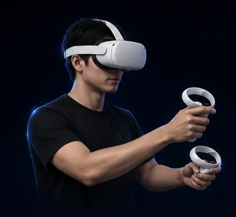
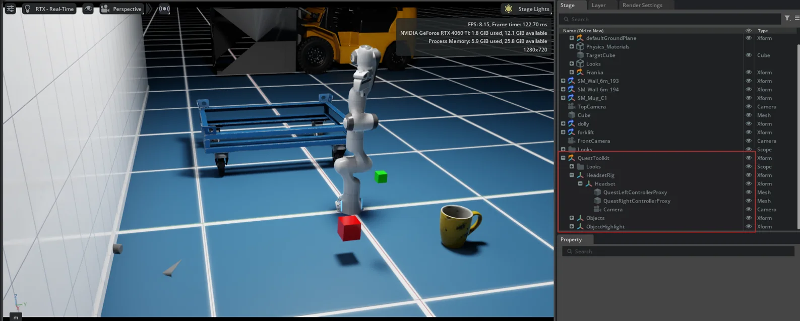

01
Case study
Quest2Skill
cross-embodiment retargeting · synthetic data generation
Capture human manipulation trajectories, retarget the end-effector motion to different robot arms, and generate synthetic demonstrations in simulation.

custom toolkit, drops into any env to manipulate objectsdigital twin: isaac sim

log end-effector trajectory at every timestep of an episoderetarget via Lula IK + RMPflow